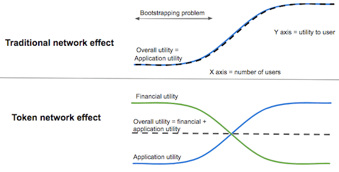

The internet’s killer application is networks. The web and email are networks. Social apps such as Instagram and Twitter are networks. Marketplaces such as Uber and Airbnb are networks.
Networks become more useful as more people join, which is wonderful once they reach scale, but it works against them when they are just getting started. That is the bootstrapping problem.
During the Web2 era, solving the bootstrapping problem required heroic entrepreneurial effort, and in many cases also large amounts of spending on sales and marketing.
Because bootstrapping networks is so difficult, it is likely that many networks ought to exist — and would improve our shared well-being — but do not, because nobody has worked out how to bootstrap them.
Web3 brings a powerful new way to bootstrap networks: token incentives.
The basic idea is this: early in the bootstrapping stage, before network effects have taken hold, give users financial utility through token rewards to compensate for the absence of native utility.

(This chart is from a longer blog post I wrote on the subject back in 2017.)
Then, as the network effect and native utility expand, the token incentives fade and eventually drop to zero, and the world is left with a new, scaled network.
There are many complexities around designing the token schedule and keeping out spammers and scammers, which I won’t cover here but is a very interesting subject.
Let’s examine a few examples. Helium is attempting to build a grassroots rival to major telecom firms by incentivizing people to place networking hardware in their homes.
(Incidentally, the idea of a grassroots, bottom-up telecom to challenge entrenched incumbents is a perennial techie fantasy, and there have been many noble attempts to create it, including early Fon and early Meraki/Roofnet. Web 3 may finally make it happen.)
The central challenge is how you get enough hardware deployed to achieve broad coverage while also developing demand on the other side. It is a classic chicken-and-egg problem.
Helium uses token incentives to bootstrap the supply side. So far, it has worked well. The network has more than 390,000 nodes around the world.
Another network that has been bootstrapped with token incentives is Arweave, a decentralized storage network. The Arweave network has grown by roughly 12x over the past year. (Full network explorer here.)
Token incentives work well, but they are also much fairer than the centralized Web2 model. Shouldn’t the people who helped create a network be able to own a meaningful share of it?
I’ve worked in Web3 and crypto since 2013 and have never worked with a project that spent significant money on sales and marketing. You do not need to spend money on marketing when users are real owners, love what they are doing, and love telling other people about it.
Web3 lets the users and builders who create networks own a meaningful share of them, while also opening up powerful new tools for entrepreneurs.
*a16z is an investor in Helium and Arweave.
This post originally appeared here.